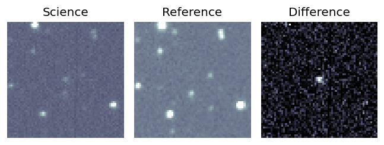
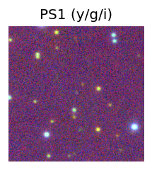
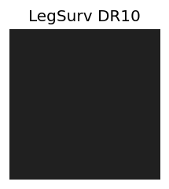
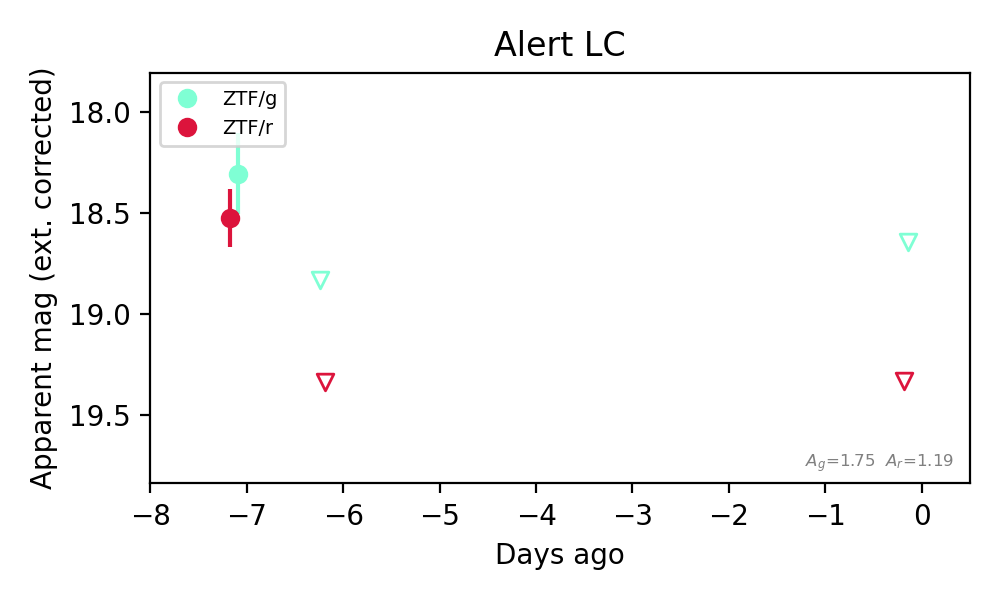
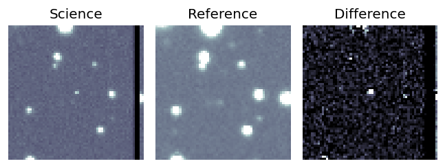
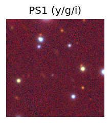
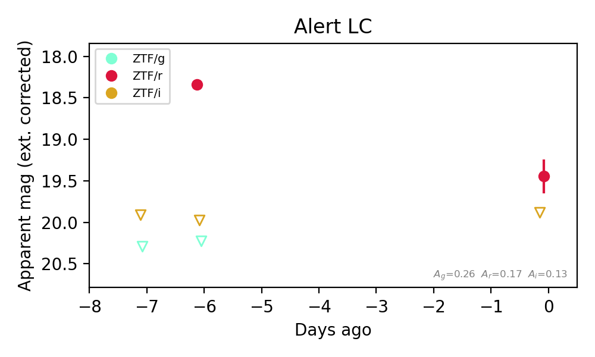

Candidate List 20261118Last night — ZTF: 2,785 passed basic cuts (23 young) · LSST: 0 passed basic cuts (0 young)Previous Day Next Day
Section 1: New Sources (age<1d) Section 2: Old (1-5d) sources observed last night Section 3: Already classified as a supernova on TNSplaceholder
Section 1: New Afterglow/FBOT Cands Last Night (0)
Section 2: Older Sources Observed Last Night (2)
1. [ZTF] ZTF19adovswt (Afterglow?) [Back to Top] [Share] [Trigger Swift] [Fritz Alert] [Fritz Source] [Lasair]RA, Dec: 92.35909, 34.55345 6h 9m26.18s, 34d33m12.41sGalactic (l, b): 177.63922, 7.18309 ext(g-r) = 0.56Observed last night in r, not detected: limit 20.52 (5σ), 6.99 d after the last r detection at 19.71 → fading ≥ 0.12 mag/day.


TESS: Sectors [43 44 45 71 72 73]
PS1: 1 source in 3 arcsec Closest: d = 4.57 arcsec photoz=0.99+/-0.44 peak abs mag = -25.60
LegacySurvey: 0 sources in 3 arcsec

Extinction-corrected gr color:
From alerts: -0.22 +/- 0.25 mag
Consistent with synchrotron, g-r>0!
Rise Rate:
g: 0.66 mag/day
r: 0.9 mag/day
Fade Rate:
g: 0.62 mag/day
r: 0.82 mag/day
2. [ZTF] ZTF26achyspb (Afterglow?) [Back to Top] [Share] [Trigger Swift] [Fritz Alert] [Fritz Source] [Lasair]RA, Dec: 106.79564, 18.54489 7h 7m10.95s, 18d32m41.62sGalactic (l, b): 197.93496, 11.70926 WARNING: -3.97 deg from ecliptic plane ext(g-r) = 0.082

TESS: Sectors [44 45 71 72]
PS1: 1 source in 3 arcsec Closest: d = 5.10 arcsec photoz=0.56+/-0.05 peak abs mag = -24.30
LegacySurvey: 0 sources in 3 arcsec

Extinction-corrected gr color:
From alerts: 2.28 +/- 0.24 mag
Extinction-corrected ri color:
From alerts: -0.44 +/- 99 mag
Consistent with synchrotron, g-r>0!
Rise Rate:
r: 1.02 mag/day
Fade Rate:
r: 0.18 mag/day
Section 3: Already classified as a supernova on TNS (0)